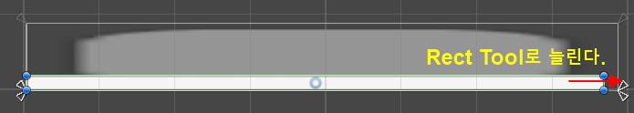

코드 관련: UGUI Scroll View Code
1. 기본 Scroll View 오브젝트 생성
먼저 캔버스 위에 스크롤 뷰의 기본 틀을 만든다.
-
Hierarchy 창에서 우클릭 후
UI > Scroll View를 선택한다. -
생성된 Scroll View를 선택하고 Inspector 창 Rect Transform에서 크기(Width, Height)를 조절한다.
-
수평 스크롤만 필요하므로, Scroll Rect 컴포넌트에서 Vertical 체크박스를 해제한다.
- 수평 스크롤만 필요하므로, Scroll Rect 컴포넌트에서 Vertical Scrollbar를 "None (Scrollbar)"로 지정한다.
-
세로 스크롤바가 필요 없다면 계층뷰에서 하위 오브젝트인
Scrollbar Vertical을 제거하거나 비활성화 한다. (난 필요 없어서 제거한다.) -
Scrollbar Vertical을 삭제하면 Scrollbar Horizontal의 크기를 Rect Tool을 이용해 늘린다.
ScrollView Inspector 속성

계층뷰에서Scrollbar Vertical 제거
Scrollbar
Horizontal의 크기를 Rect Tool로 늘리기
2. Content 영역 설정
스크롤될 실제 내용물이 담기는 공간인 Content를 설정한다.
-
Scroll View 하위의
Viewport > Content오브젝트를 선택합니다. -
Inspector에서 Add Component를 클릭해 Horizontal Layout Group을 추가한다. (아이템들을 가로로 자동 정렬해줍니다.)
-
Content Size Fitter 컴포넌트도 추가한다.
-
Horizontal Fit 설정을 Min Size 또는 Preferred Size로 변경한다. 이 설정을 해야 아이템이 늘어날 때 Content의 가로 길이도 자동으로 늘어난다.
-
-
Horizontal Layout Group 설정에서
Child Alignment를 Middle Left 정도로 맞추고,Spacing을 조절해 아이템 사이의 간격을 둔다. (코드로 Spacing 값을 조정 할것이다.)
3. 아이템(내용물) 추가하기
이제 스크롤될 개별 요소들을 넣을 차례이다.
-
Content 오브젝트 아래에 마우스 우클릭 후
UI > Image또는Button등을 생성한다. -
생성한 아이템을
Ctrl + D로 여러 개 복제해 본다.
-
Content Size Fitter 덕분에 아이템을 복제할수록 Content의 가로 길이가 자동으로 길어지는 것을 확인할 수 있다.